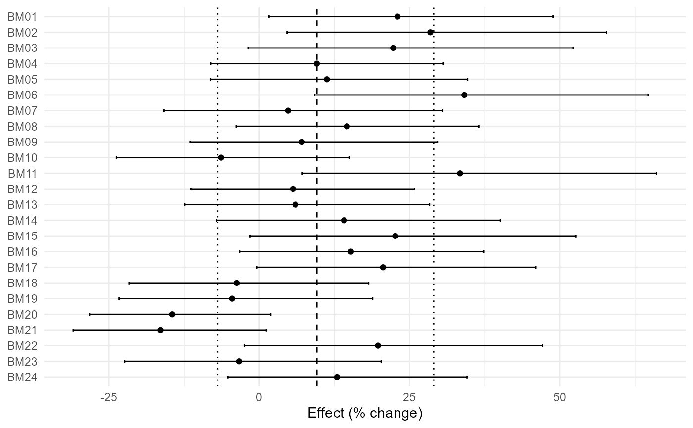
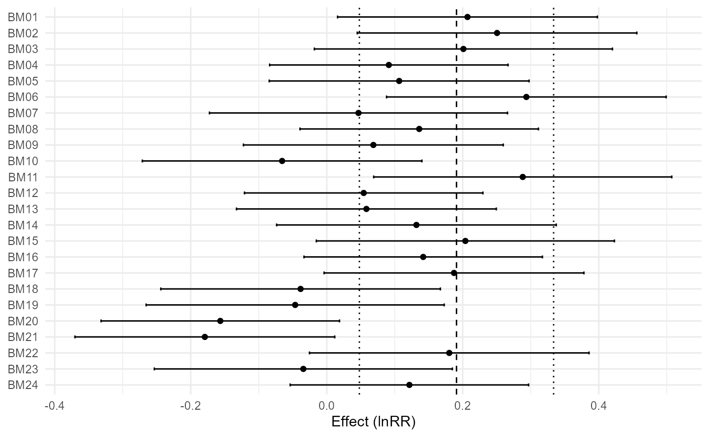
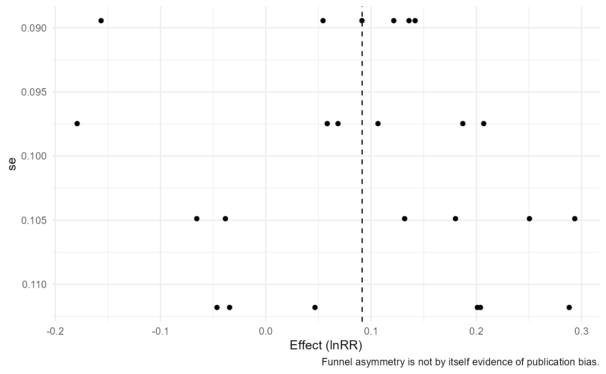
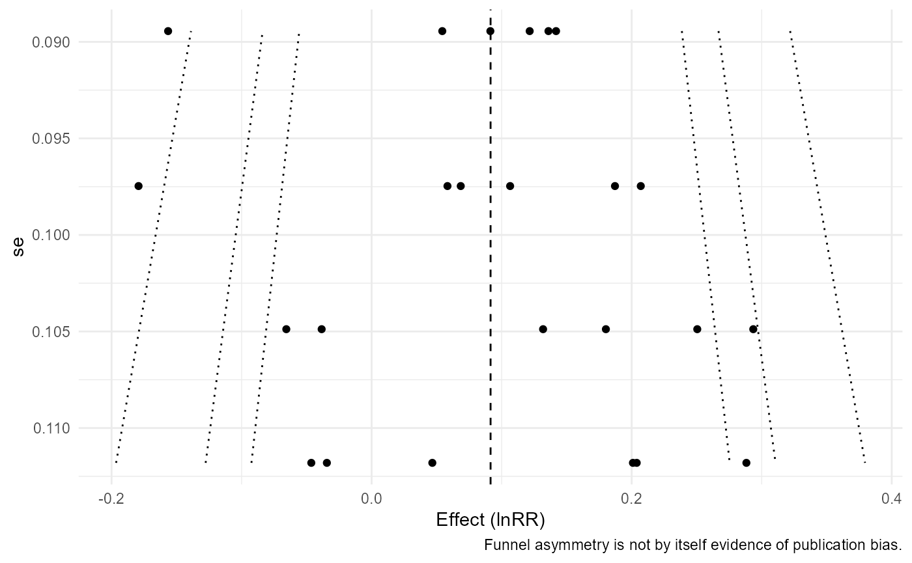
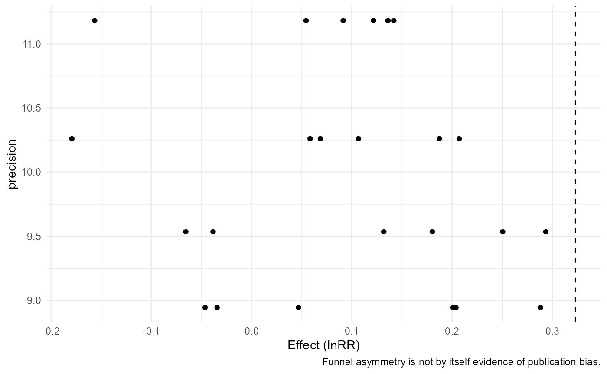

Random Effects, Heterogeneity, Prediction, and Practical Relevance
Source:vignettes/v02-models-heterogeneity-prediction.Rmd
v02-models-heterogeneity-prediction.RmdThree model settings
m1 <- apm_fit(agri_effects_benchmark)
m2 <- apm_fit(agri_effects_benchmark,model="common")
m3 <- apm_fit(agri_effects_benchmark,mods=~rainfall,model="mixed")
h1 <- apm_heterogeneity(m1,ci=FALSE)
h2 <- apm_heterogeneity(m2,ci=FALSE)
h3 <- apm_heterogeneity(m3,ci=FALSE)Prediction
apm_prediction(m1,transform="percent")
#> <apm_prediction> transform=percent
#> pred se ci_lower ci_upper pi_lower pi_upper
#> 9.581184 0.02609049 4.118456 15.33052 -6.925962 29.01595
apm_prediction(m3,newdata=data.frame(rainfall=c(600,900,1200)),transform="percent")
#> <apm_prediction> transform=percent
#> pred se ci_lower ci_upper pi_lower pi_upper
#> 19.095657 0.04039360 10.030434 28.907748 3.892933 36.52300
#> 10.584561 0.02380854 5.542804 15.867161 -1.985451 24.76663
#> 2.681705 0.03453616 -4.038762 9.872829 -9.857939 16.96574
apm_prediction(m1,transform="exp")
#> <apm_prediction> transform=exp
#> pred se ci_lower ci_upper pi_lower pi_upper
#> 1.095812 0.02609049 1.041185 1.153305 0.9307404 1.29016Agronomic thresholds
apm_threshold(m1,5,"percent")
#> <apm_threshold>
#> threshold: 5 [ percent ]
#> CI: crosses threshold
#> PI: crosses threshold
#> probability: 0.696
apm_threshold(m1,1.10,"ratio")
#> <apm_threshold>
#> threshold: 1.1 [ ratio ]
#> CI: crosses threshold
#> PI: crosses threshold
#> probability: 0.482
apm_threshold(m1,0,"model","less")
#> <apm_threshold>
#> threshold: 0 [ model ]
#> CI: entirely above threshold
#> PI: crosses threshold
#> probability: 0.136Subgroups and figures
apm_subgroup(agri_effects_benchmark,crop,test="z")
#> <apm_subgroup>
#> subgroup k estimate se ci_lower ci_upper pi_lower pi_upper
#> maize 8 0.08643770 0.05243914 -0.01634113 0.1892165 -0.1505993 0.3234746
#> soybean 8 0.08415367 0.03530365 0.01495980 0.1533475 0.0149598 0.1533475
#> wheat 8 0.10958704 0.05273047 0.00623722 0.2129369 -0.1296627 0.3488368
#> Omnibus subgroup test:
#> QM df QMp
#> 0.1950858 2 0.9070634
apm_subgroup(agri_effects_benchmark,soil_texture,test="z")
#> <apm_subgroup>
#> subgroup k estimate se ci_lower ci_upper pi_lower pi_upper
#> clay 8 0.10958704 0.05273047 0.00623722 0.2129369 -0.1296627 0.3488368
#> loam 8 0.08415367 0.03530365 0.01495980 0.1533475 0.0149598 0.1533475
#> sandy 8 0.08643770 0.05243914 -0.01634113 0.1892165 -0.1505993 0.3234746
#> Omnibus subgroup test:
#> QM df QMp
#> 0.1950858 2 0.9070634
apm_subgroup(agri_effects_benchmark,cut(rainfall,3),test="z")
#> <apm_subgroup>
#> subgroup k estimate se ci_lower ci_upper pi_lower
#> (534,803] 8 0.162886003 0.03530365 0.09369213 0.2320799 0.09369213
#> (803,1.07e+03] 8 0.103796753 0.03531418 0.03458223 0.1730113 0.03442177
#> (1.07e+03,1.34e+03] 8 0.004110183 0.05233673 -0.09846792 0.1066883 -0.23214699
#> pi_upper
#> 0.2320799
#> 0.1731717
#> 0.2403674
#> Omnibus subgroup test:
#> QM df QMp
#> 8.085794 2 0.01754657
apm_forest(m1,transform="percent")
#> `height` was translated to `width`.
apm_forest(m1,transform="exp",columns="crop")
#> `height` was translated to `width`.
apm_forest(m3,transform="none")
#> `height` was translated to `width`.
apm_funnel(m1)
apm_funnel(m1,contour=TRUE)
apm_funnel(m3,yaxis="precision")
apm_table(m1,"model")
#> term estimate se ci_lower ci_upper
#> intrcpt intrcpt 1.096 0.026 1.041 1.153
apm_table(h1,"heterogeneity")
#> k Q Q_df Q_p tau2 tau I2 H2
#> 1 24 37.477 23 0.029 0.006 0.079 38.534 1.627
apm_table(m3,"model",transform="percent")
#> term estimate se ci_lower ci_upper
#> intrcpt intrcpt 38.133 0.094 14.894 66.073
#> rainfall rainfall -0.025 0.000 -0.044 -0.006